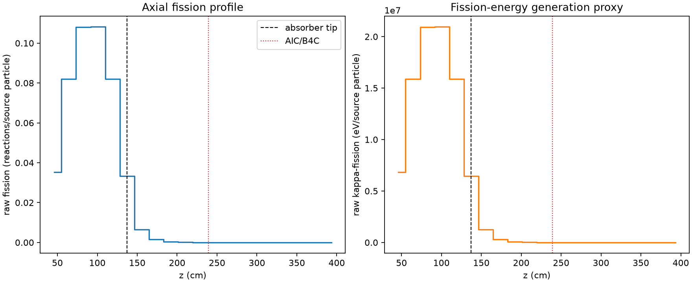
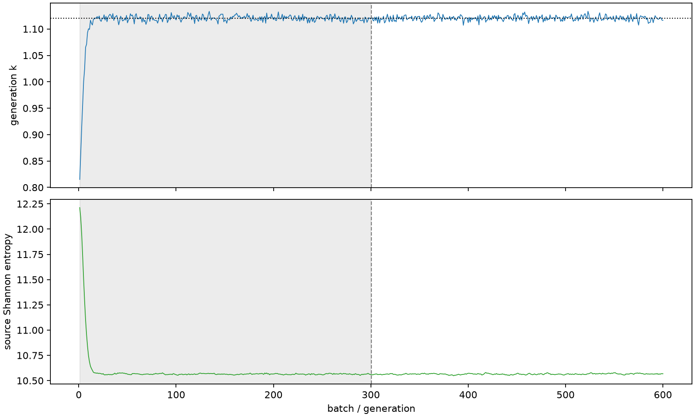

| field | value |
|---|---|
| experiment | V2-STAGE_256_OGRENCI_04-0018 |
| k | 1.1203569765197279 |
| MC standard error | 0.00017072591515029085 |
| seconds | 1008.8220313710044 |
| acceptance | not_assessed |
| convergence | review_required |
Completed is output integrity only; physical and statistical review required. Zero tallies do not prove zero production or zero uncertainty.
| diagnostic | value |
|---|---|
| geometric fuel voxels | 5280 |
| zero fission tally voxels | 1663 |
| low signal fuel voxels | 2649 |
| low signal fission share | 6.817679388720518e-05 |
| low signal kappa share | 6.821783163550285e-05 |
| important fission share | 0.950051023998773 |
| previous filter included | 2631 |
| duration estimate s | 1562.5173488400023 |
| actual minus estimate s | -553.6953174689979 |
| fission relative MC error | statistics |
|---|---|
| all_geometric_fuel | {"voxels": 5280, "positive_mean_voxels": 3617, "zero_mean_voxels": 1663, "undefined_relative_error_voxels": 1663, "median": 0.019273807846979265, "p95": 0.9293754213099029, "maximum": 1.0000000000000002} |
| low_signal | {"voxels": 2649, "positive_mean_voxels": 986, "zero_mean_voxels": 1663, "undefined_relative_error_voxels": 1663, "median": 0.5620044420502117, "p95": 1.0, "maximum": 1.0000000000000002} |
| important_95pct | {"voxels": 1468, "positive_mean_voxels": 1468, "zero_mean_voxels": 0, "undefined_relative_error_voxels": 0, "median": 0.005321775072085766, "p95": 0.008850710615224102, "maximum": 0.01050755997086646} |
| outside_previous_filter | {"voxels": 2649, "positive_mean_voxels": 986, "zero_mean_voxels": 1663, "undefined_relative_error_voxels": 1663, "median": 0.5620044420502117, "p95": 1.0, "maximum": 1.0000000000000002} |
| kappa_fission relative MC error | statistics |
|---|---|
| all_geometric_fuel | {"voxels": 5280, "positive_mean_voxels": 3617, "zero_mean_voxels": 1663, "undefined_relative_error_voxels": 1663, "median": 0.019241618131739986, "p95": 0.9288293777813417, "maximum": 1.0000000000000002} |
| low_signal | {"voxels": 2649, "positive_mean_voxels": 986, "zero_mean_voxels": 1663, "undefined_relative_error_voxels": 1663, "median": 0.5617813538325007, "p95": 1.0, "maximum": 1.0000000000000002} |
| important_95pct | {"voxels": 1468, "positive_mean_voxels": 1468, "zero_mean_voxels": 0, "undefined_relative_error_voxels": 0, "median": 0.005315745222827534, "p95": 0.008839746238619934, "maximum": 0.010493704860424648} |
| outside_previous_filter | {"voxels": 2649, "positive_mean_voxels": 986, "zero_mean_voxels": 1663, "undefined_relative_error_voxels": 1663, "median": 0.5617813538325007, "p95": 1.0, "maximum": 1.0000000000000002} |
| axial bin | fission share | kappa-fission share |
|---|---|---|
| 1 | 0.07696611043411691 | 0.07696838185898974 |
| 2 | 0.1794681675004934 | 0.17946472815524678 |
| 3 | 0.23632626809863247 | 0.23632130475590407 |
| 4 | 0.2365633822218659 | 0.23655867142634043 |
| 5 | 0.17923914306081962 | 0.17923541956134018 |
| 6 | 0.07288191628876868 | 0.07288895257196444 |
| 7 | 0.014121910101597145 | 0.014127580046718175 |
| 8 | 0.0033773303295192513 | 0.0033787276979474184 |
| 9 | 0.0007981073907231233 | 0.0007984364205242545 |
| 10 | 0.00019551407796530014 | 0.00019560903141944527 |
| 11 | 4.841573526420084e-05 | 4.8439235959708046e-05 |
| 12 | 9.960851963006285e-06 | 9.972767429229845e-06 |
| 13 | 2.985828489594887e-06 | 2.9883362218424457e-06 |
| 14 | 7.844528714824892e-07 | 7.845118555962323e-07 |
| 15 | 3.626909897624311e-09 | 3.6221387778482145e-09 |
| 16 | 0.0 | 0.0 |
| 17 | 0.0 | 0.0 |
| 18 | 0.0 | 0.0 |
| 19 | 0.0 | 0.0 |
| 20 | 0.0 | 0.0 |
Histories include the inactive-to-active transition at batch 300. kappa-fission approximates fission energy production, not total heat deposition.

